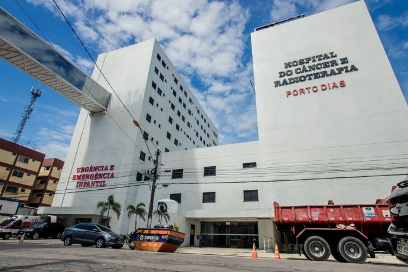

ParticularHospital Porto Dias
Ortopedia • Cardiologia • Oncologia
Hospital Digital: Quase todos os processos são integrados e sem papel, garantindo maior segurança nos dados do paciente. Maternidade Porto Dias: Uma unidade de hotelaria premium com foco no parto humanizado e UTI Neonatal de última geração.
Possui Heliponto